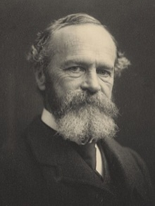

1842-1910 · The 1800s
← The philosophy map · About William James
Is an idea true because it matches the facts, or because it works in real life?
You're nervous before a job interview. A friend says, "Just believe you'll get it." There's no proof that you will, but believing it makes you calmer, and you speak better. Did the belief become true because it worked? An American thinker said this is how many truths really work.
Read one part at a time. After each part, close your eyes and answer the question before you check.
William James was born in New York in 1842 into a rich and unusual family. His father loved philosophy and religion, and his younger brother Henry became a famous novelist. The children were taken to schools all over Europe. William first wanted to be a painter, then studied chemistry, and then medicine. He qualified as a doctor at Harvard in 1869, but he never actually worked as one.
What did William James try before he found his real work?
As a young man, James fell into a deep depression. He felt that his life was controlled like a machine and that his choices meant nothing. According to his diary, he decided that his first act of free will would be to believe in free will. He could not prove that it was true, but believing it helped him live and act again. The idea that beliefs are tools for living stayed with him.
How did James get through his dark period?
James taught at Harvard and set up one of the first psychology laboratories in America. In 1890, after twelve years of work, he published The Principles of Psychology. In it he described thought as a 'stream of consciousness', a phrase that writers later loved. In 1907 he published Pragmatism, which said that we should judge ideas by what they do in real life. He died in New Hampshire in 1910.
What was James's book Pragmatism about?
Each word is hidden in a sentence. Read it aloud and say what you think the bold word means. Then reveal and compare.
Use James's test. Which questions make a real, practical difference, and which make none at all? Decide together, then reveal.
Now you: explain pragmatism to a friend who has never heard of it. Speak for about a minute. Use the starters if they help.
A climber is trapped on a mountain. The only way back is to jump across a gap wider than any she has jumped before. If she believes she can do it, she'll jump with all her strength. If she doubts, she may hesitate. There is no evidence either way.
Tap two cards. Use the timer to keep going, and use at least two of the phrases above.
No looking back. Answer from memory first, then check.
What do the camel, the lion and the child stand for in Nietzsche's idea?
What did Marx say drives history?
What was Rousseau's big idea about people and society?
What did Machiavelli argue about how rulers should act?
From memory, out loud. Then check.
1. According to William James, how should we judge whether an idea is true?
2. How did James get through his depression as a young man?
3. What did James's squirrel story show?
4. What does 'pragmatic' mean? Give an example.